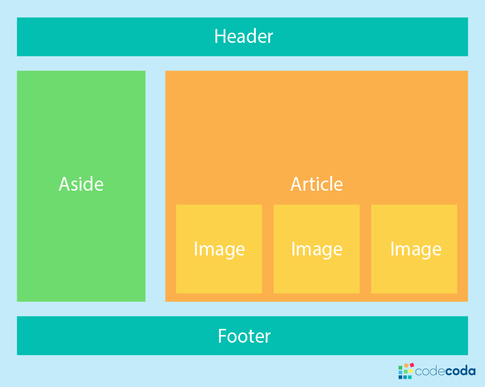

s (37 sloc) 1.07 KB

<!DOCTYPE html>
<html lang="en">

<head>
    <meta charset="UTF-8">
    <meta http-equiv="X-UA-Compatible" content="IE=edge">
    <meta name="viewport" content="width=device-width, initial-scale=1.0">
    <title>Document</title>
    <style>
        img {
            width: 30%;
            min-width: 200px;
        }

        .wrapper {
            display: flex;

            background-color: gray;
            flex-direction: column;
        }

        .header {
            background: #6b9b37;
        }

        .main {
            background: #9ccc65;
            display: flex;
            flex-wrap:  wrap;
        }

        .footer {
            background: #cfff95;
        }
        .left{ background: #ffffa8;
        }
        .content{
    width: 80%;
        }
        .header, .footer,.left{
            padding: 12px;
          text-align:  center;
        }
    </style>
</head>

<body>
    <div class="wrapper">
        <div class="header">header</div>
        <div class="main">
            <div class="left">left</div>
            <div class="content">
                
                <ul>
                    <li><a href="https://htmlacademy.ru">HTML academy</a></li>
                    <li><a href="https://flexboxfroggy.com">Flex froggy</a></li>
                    <li><a href="https://m2.material.io/resources">Color picker</a></li>
                </ul>
            </div>
        </div>
        <div class="footer">footer</div>
    </div>
</body>

</html>

<!--https://github.com/KirillovItstep/classworks/tree/main/html-->
<!-- узнать про flex,  flex-direction,grid(ne obazatelno)-->